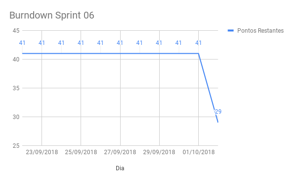
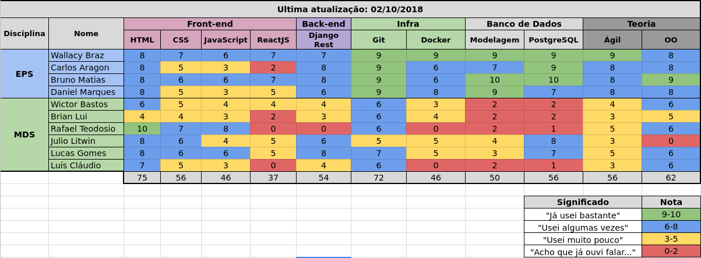

Sprint 06
Histórico da Revisão
| Data | Versão | Descrição | Autor |
|---|---|---|---|
| 22/09/2018 | 1.0 | Planejamento e retrospectiva da sprint | Carlos Aragon |
| 08/10/2018 | 1.1 | Revisão | Daniel Marques |
1. Introdução
Número da Sprint: 6
Data de Início: 22/09/2018
Data de Término: 02/10/2018
Duração: 10 dias
Pontos Planejados: 41
Pontos Adicionados (Dívida): 0
2. Papéis
Scrum Master: * Carlos Aragon
Product Owner: * Daniel Marques
Arquiteto: * Bruno Matias
DevOps: * Francisco Wallacy
Desenvolvedores: Brian Lui Julio Litwin Lucas Luís Cláudio Rafael Teodósio Wictor Girardi
3. Histórias Planejadas
As histórias podem ser vistas no backlog do produto.
3.1. EP02FE02US07 - Criar nota fiscal (8 pontos)
3.1.1. Descrição
Eu, como administrador ou funcionário desejo ler e armazenar os dados da nota fiscal a partir de pdf's nativos para poder gerenciar os gastos da empresa, assim, planejar as estratégias futuras.
3.1.2. Critério de Aceitação
- O usuário deve poder adicionar o arquivo PDF a ser criado a NF.
- A nota fiscal a ser adicionada deve ser nativa (conter texto).
- O sistema deve notificar o usuário sobre conclusão ou falha no processo.
3.2. EP02FE02US09 - Visualizar nota fiscal (5 pontos)
3.2.1. Descrição
Eu, como administrador ou funcionário desejo visualizar dados de uma nota fiscal específica para ter conhecimento dos gastos registrados em uma nota fiscal.
3.2.2. Critério de Aceitação
- O usuário deve poder visualizar os seguintes dados de uma NF específica:
- Dados da NF:
- Natureza da Operação
- Chave de acesso
- Protocolo de Autorização de Uso
- Data de Emissão
- Dados do Emitente:
- Nome
- Cnpj
- Inscrição Estadual
- Dados do Remetente:
- Nome
- Cnpj
- Endereço
- Município
- Bairro
- Telefone
- Cep
- Imposto:
- Valor de ICMS
- Valor do seguro
- Valor do frete
- Valor da Confins
- Valor da importação
- Valor do PIS
- Outras despesas
- Transportador:
- Nome
- Frente por conta
- Código ANTT
- Placa do veículo
- Cnpj
- Endereço
- Município
- Inscrição Estadual
- Quantidade
- Espécie
- Marca
- Número
- Peso Bruto
- Peso Líquido
- Produto/Serviço:
- Item
- Código de cada item
- Valor unitário
- Valor total
- Quantidade
3.3. EP02FE02US10 - Listar nota fiscal (3 pontos)
3.3.1. Descrição
Eu, como administrador ou funcionário desejo listar notas fiscais registradas no sistema para ter conhecimento das notas fiscais registradas no sistema.
3.3.2. Critério de Aceitação
- O usuário deve poder visualizar todas as notas fiscais armazenadas no sistema.
- A listagem de NF deve ser feita por um modo de tabela.
- Em cada linha da tabela deve haver:
- Nome da empresa emitente
- CNPJ da empresa emitente
- Chave de acesso
- Data de Emissão
- Valor total
3.4. EP02FE06TS01 - Converter PDF (1 pontos)
3.4.1. Descrição
Eu, como Desenvolvedor desejo converter o pdf de nota fiscal em texto para o parser realizar a análise.
3.4.2. Critério de Aceitação
- O PDF que será convertido deve ser nativo (conter texto).
- Deve ser gerado um arquivo de texto na saída da conversão.
- O texto gerado deve ser armazenado no banco de dados.
- Deve ser usado uma ferramenta que já faça a conversão.
3.5. EP02FE06TS02 - Parser de nota fiscal (21 pontos)
3.5.1. Descrição
Eu, como desenvolvedor desejo realizar a análise de cada nota fiscal para poder criar uma estrutura de dados de notas fiscais.
3.5.2. Critério de Aceitação
- O PDF que será convertido deve ser nativo (conter texto).
- Deve ser gerado um arquivo de texto na saída da conversão.
- O texto gerado deve ser armazenado no banco de dados.
- Deve ser usado uma ferramenta que já faça a conversão.
3.5. EP03FE07TS03 - Menu Lateral (3 pontos)
3.5.1. Descrição
Eu, como desenvolvedor desejo implementar layout básico do sistema para dar acessibilidade ao usuário as funcionalidades existentes.
3.5.2. Critério de Aceitação
- O PDF que será convertido deve ser nativo (conter texto).
- Deve ser gerado um arquivo de texto na saída da conversão.
- O texto gerado deve ser armazenado no banco de dados.
- Deve ser usado uma ferramenta que já faça a conversão.
4. Presença no Sprint Planning
| Presente | Membro |
|---|---|
| S | Brian Lui |
| S | Bruno Matias |
| S | Carlos Aragon |
| S | Daniel Marques |
| S | Francisco Wallacy |
| S | Julio Litwin |
| S | Lucas Gomes |
| S | Luís Cláudio |
| S | Rafael Teodósio |
| S | Wictor Girardi |
5. Resultados
| ID | História | Status | Pontos |
|---|---|---|---|
| EP02FE02US07 | Criar nota fiscal | Não concluído | 8 |
| EP02FE02US09 | Visualizar nota fiscal | Concluído | 5 |
| EP02FE02US10 | Listar nota fiscal | Concluído | 3 |
| EP02FE06TS01 | Converter PDF | Concluído | 1 |
| EP02FE06TS02 | Parser de nota fiscal | Não concluído | 21 |
| EP03FE07TS03 | Menu Lateral | Concluído | 3 |
Pontos concluídos: 12
Pontos não concluídos: 29
5.1. Burndown da Sprint

5.2. Velocity da Sprint

Para visualizar a imagem ampliada, clique aqui.
5.3. Quadro de Conhecimentos

Para visualizar a imagem ampliada, clique aqui.
{kind=link}
5.4. Retrospectiva:
| Negativo | Positivo | Melhoria |
|---|---|---|
| Alguns integrantes não fizeram as atividades planejadas. | Integrantes aumentaram o conhecimento nas tecnologias | EPS deve aumentar a cobrança sobre os integrantes de MDS |
| A equipe está desorganizada | Alguns integrantes conseguiram entregar suas histórias | Aprender mais as tecnologias |
| Alguns integrantes não implementaram muito em ReactJS | Aumento de conhecimento em teste em python | Os integrantes da equipe devem ser mais proativos |
| Falta de disciplina na equipe | A comunicação da equipe foi mais efetiva comparada as sprints passadas | Ter mais responsabilidade com o projeto |
| A equipe está sem dedicação ao projeto | A equipe implementou mais em relação as sprints passadas | Aumentar a regularidade de trabalho |
| Falta de foco da equipe | Aumento de conhecimento com o pareamento na tecnologia ReactJS | |
| Alguns integrantes não estão dedicando tempo ao projeto | Mais engajamento de alguns integrantes | |
| Alguns integrantes não estão trabalhando com o desempenho esperado | ||
| A equipe não está rendendo como deveria | ||
| Alguns integrantes não estão proativos | ||
| Falta de compromentimento | ||
| A equipe está muito atrasada |
5.5. Retrospectiva do Scrum Master:
Sprint com alta produtividade, devido a necessidade de entregar valor para a release 1. Mas não foi concluído duas histórias planejadas que eram para ser entrega na Release 01.
5.6. Presença no Sprint Review
| Presente | Membro |
|---|---|
| S | Brian Lui |
| S | Bruno Matias |
| S | Carlos Aragon |
| S | Daniel Marques |
| S | Francisco Wallacy |
| S | Julio Litwin |
| S | Lucas Gomes |
| S | Luís Cláudio |
| S | Rafael Teodósio |
| S | Wictor Girardi |